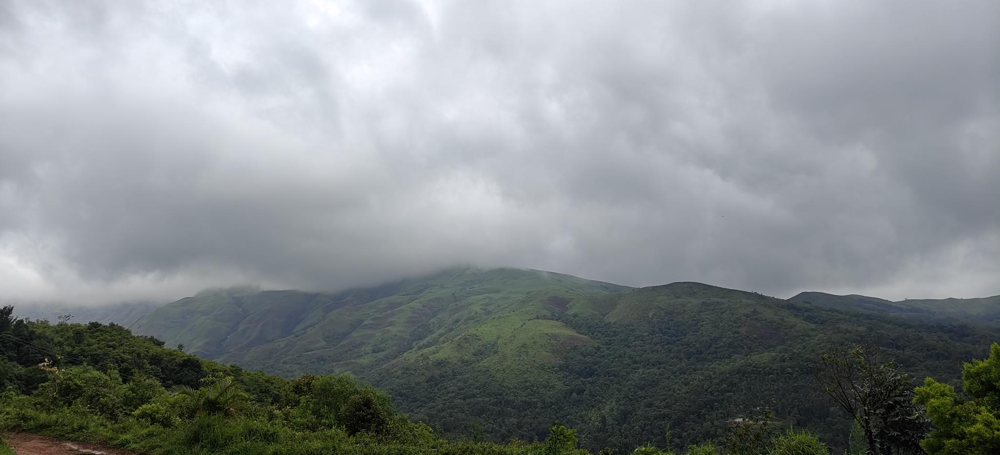

DAY 01
THE ESCAPE BEGINS
Bengaluru → Kudremukh

Into the Western Ghats
Leave the city behind and drive towards the mountains. Settle into your stay, slow down and spend the evening around the fire with the group.
06:00 AM
Departure from Bengaluru
12:30 PM
Lunch en route and continue towards Kudremukh
04:00 PM
Check-in and unwind
07:30 PM
Campfire, dinner and introduction to the escape
Road Trip
Check-in
Campfire